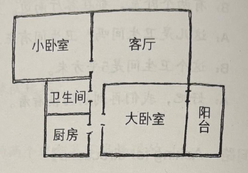
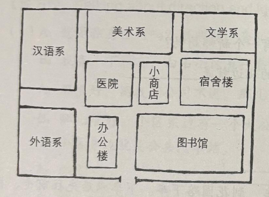

Goldsmiths - Mandarin Chinese Intermediate 2 Summer Course
30th April 2026
Lesson 1
词汇
| 中文 | 拼音 | 英语 | 词类 | 句子 | 笔记 |
|---|---|---|---|---|---|
| 寄 | jì | send | verb | ||
| 错 | cuò | wrong, erroneous | adverb | ||
| 包裹 | bāoguǒ | parcel, package | noun | ||
| 些 | xiē | some | measure word | ||
| 英文 | Yīngwén | English | noun | ||
| 词典 | cídiǎn | dictionary | noun | ||
| 旧 | jiù | old, used | adverb | ||
| 包 | bāo | to wrap | verb | ||
| 邮局 | yóujú | post office | noun | ||
| 猜 | cāi | guess | verb |
作业
一、给下面的词语写出拼音 ＋ 声调，然后组词 Yī, gěi xiàmiàn de cíyǔ xiě chū pīnyīn + shēngdiào, ránhòu zǔcí. 1,Write the pinyin and tones for the following words, and then form them into words
| 中文 | 拼音 | 英语 |
|---|---|---|
| 邮局 | yóujú | post office |
| 包裹 | bāoguǒ | parcel |
| 词典 | cídiǎn | dictionary |
| 英文 | Yīngwén | English |
| 旧 | jiù | old |
| 奇 | jì | send (parcel) |
| 包 | bāo | wrap it |
| 错 | cuò | wrong, mistake |
二、用结果补语填空，并把句子改成“把”字句。 Èr, yòng jiéguǒ bǔyǔ tiánkòng, bìng bǎ jùzi gǎichéng "bǎ" zì jù. 2, Fill in the blanks with the resultative complement and change them to the "把" sentence.
我包好包裹了。－》 我把包裹包好了。
我做完作业了。－》 我把作业做完了。
我写对汉字了。－》 我把汉字写对了。
我听懂汉语了。－》 我把汉语听懂了。
我写错名字了。－》 我把名字写错了。
三、用结果补语描述你今天做了什么。 Sān, yòng jiéguǒ bǔyǔ miáoshù nǐ jīntiān zuòle shénme. 3, Describe what you did today with resultative complement.
v1
今天我睡好了。
起床起得比较晚。
上午我在公园跑完步了。
然后中午我吃饱了。
下午在图书馆写完了作业。
v2
今天我睡好了。
起床起得比较晚。
上午我先在公园跑完步，然后回家把午饭吃饱了。
下午我去了图书馆，写完了汉语作业， 也复习好了上个星期的课文，还写对了一些汉字。
Lesson 2
词汇
| 中文 | 拼音 | 英语 | 词类 | 词语短语 | 句子 | 笔记 |
|---|---|---|---|---|---|---|
| 往 | wǎng | to, toward | preposition | 往美国，往西安，往欧洲寄 | ||
| 航空 | hángkōng | aviation | noun | 寄航空，航空公司 | ||
| 空 | kōng | sky, air | noun | 空中，天空 | ||
| 海运 | hǎiyùn | sea transportation, ocean shipping | noun | 寄海运，海运公司 | ||
| 海 | hǎi | sea, big lake | noun | 海边，海上，海里 | ||
| 邮费 | yóufèi | postage | noun | 交邮费，多少邮费 | ||
| 费 | fèi | fee, expense, charge | noun | 车费，学费，水电费 | ||
| 流利 | liúlì | fluent | adjective | |||
| 运费 | yùnfèi | freight，cargo fee | noun | |||
| 草莓 | cǎoméi | strawberies | noun | |||
| 取 | qǔ | to take, to get, to fetch | verb | 取钱，取包裹，取照片，取东西 | ||
| 通知单 | tōngzhīdān | letter of notice | noun | 包裹通知单，取通知单 | ||
| 通知 | tōngzhī | to notify, to inform; notification | verb, noun | 通知你，写通知 | ||
| 单 | dān | sheet, list | noun | 收费单，床单，菜单 | ||
| 海关 | hǎiguān | customhouse, customs | noun | 去海关，海关工作人员 | ||
| 别 | bié | don't | adverb | 别忘了，别迟到，别写错了 | ||
| 护照 | hùzhào | passport | noun | 带护照，办护照，取护照 | ||
| 客气 | kèqi | polite, courteous | adjective | 不客气，不要客气，别客气，太客气 | ||
| 建国门 | jiànguó mén | Jianguo Men (place in Beijing) | proper noun | 去建国门，到建国门 | ||
| 门 | mén | door, gate, entrance | noun | 开门，关门，门口，大门 |
作业
一、自己读一遍课文
马大为： 您好，我要寄这个包裹。
工作人员： 好，我看一下。
马大为： 这些书都是新的。 这四本书是中文的，那两本书是英文得。 这本大词典是旧的…
工作人员： 好了，请包好。
马大为： 对不起，这是我刚学的课文，我想练习练习。
工作人员： 您汉语说得很流利。 您要往哪儿寄？
马大为： 伦敦。
工作人员： 您寄航空还是海运？
马大为： 寄航空比海运贵，可是比海运快多了。 寄航空吧。
工作人员： 邮费是 一百零六 块。 请在这儿写上您的名字。
马大为： 好的，我还要取一个包裹。
工作人员： 请把包裹通知单给我。 对不起，您的包裹不在我们邮局取， 您得去海关取。
马大为： 请问，海关在哪儿？
工作人员： 在建国门。 别忘了把您的护照带去。
马大为： 谢谢。
工作人员： 不客气。
二、给下面的词语写出拼音 ＋ 声调，然后组词 Ér, gěi xiàmiàn de cíyǔ xiě chū pīnyīn + shēngdiào, ránhòu zǔcí. 2,Write the pinyin and tones for the following words, and then form them into words
| 中文 | 拼音 | 词 |
|---|---|---|
| 往 | wǎng | |
| 航空 | hángkōng | |
| 空 | kōng | |
| 海运 | hǎiyùn | |
| 海 | hǎi | |
| 邮费 | yóufèi | |
| 费 | fèi | |
| 取 | qǔ | |
| 通知单 | tōngzhīdān | |
| 通知 | tōngzhī | |
| 单 | dān | |
| 海关 | hǎiguān | |
| 别 | bié | |
| 护照 | hùzhào | |
| 客气 | kèqī | |
| 建国门 | Jiànguó mén | |
| 门 | mén |
三、用所给的单词和短语造句。 Sān, Yòng suǒ gěi de dāncí hé duǎnyǔ zàojù. 3, Make sentences with the words and phrases given.
1 .
多，寄，了，比，航空，慢，海运，寄
海运寄比航空寄慢多了。
2 .
包裹，取，建国门，在
在建国门取包裹。
包裹在建国门取。
3 .
钱，下，到，我，取，星期，要，银行
下星期我要到银行取钱。
4 .
今天，带，把，护照，我，了，来
今天我把护照带来了。
5 .
左，往，请，走，去，图书馆
去图书馆，请往左走。
Lesson 3
词汇
| 中文 | 拼音 | 英语 | 词类 | 词语短语 | 句子 | 笔记 |
|---|---|---|---|---|---|---|
| 东边 | dōngbiān | the east side | noun | 东边的商场 学校东边 在银行东边 | ||
| 东 | dōng | east | noun | 往东走 | ||
| 离 | lí | away, off, from | preposition | 离学校 离这儿 离那儿 | ||
| 远 | yuǎn | far | adverb | 不远 很远 非常远 太远 离学院不太远 | ||
| 车站 | chēzhàn | bus stop | noun | 去车站 在车站等车 | ||
| 前边 | qiánbiān | front side | noun | 前边的公园 前边的人 花园小区前边 在宿舍前边 | ||
| 前 | qián | front, forward | noun | 往前走 | ||
| 拐 | guǎi | to turn | verb | 往右拐 往左拐 往东拐 先往右拐 |
| 中文 | 拼音 | 英语 | 词类 | 句子 | 笔记 |
|---|---|---|---|---|---|
| 医院 | yīyuàn | hospital | noun | ||
| 警察局 | jǐngchá jù | police station | noun | ||
| 商店 | shāngdiàn | shop | noun | ||
| 学校 | xuéxiào | school | noun | ||
| 银行 | yínháng | bank | noun | ||
| 法院 | fǎyuàn | court | noun | ||
| 酒店 | jiǔdiàn | hotel | noun | ||
| 食堂 | shítáng | canteen, mess hall | noun | ||
| 宿舍 | sùshè | dormitory, hostel | noun | ||
| 教学楼 | jiàoxuélóu | teaching building | noun | ||
| 书店 | shūdiàn | bookstore | noun |
| 中文 | 拼音 | 英语 | 词类 | 句子 | 笔记 |
|---|---|---|---|---|---|
| 狮子 | shīzǐ | lion | noun | ||
| 猫头鹰 | māotóuyīng | owl | noun | ||
| 鹅 | é | goose | noun | ||
| 熊猫 | xióngmāo | panda | noun | ||
| 长颈鹿 | chángjǐnglù | giraffe | noun | ||
| 猫 | māo | cat | noun | ||
| 鹿 | lù | deer | noun | ||
| 大象 | dà xiàng | elephant | noun | ||
| 兔子 | tùzǐ | rabbit | noun |
| 中文 | 拼音 | 英语 | 词类 | 句子 | 笔记 |
|---|---|---|---|---|---|
| 苹果 | píngguǒ | apple | noun | ||
| 香蕉 | xiāngjiāo | banana | noun | ||
| 柠檬 | níngméng | lemon | noun | ||
| 西瓜 | xīguā | waterlemon | noun | ||
| 草莓 | cǎoméi | strawberries | noun | ||
| 桃子 | táozǐ | peach | noun | ||
| 菠萝 | bōluó | pineapple | noun | ||
| 橙子 | chéngzǐ | orange | noun | ||
| 芒果 | mángguǒ | mango | noun |
作业
把句子改成“是……的”结构，来强调括号里的内容。 Bǎ jùzi gǎichéng “shì…de” jiégòu, lái qiángdiào kuòhào lǐ de nèiróng. Change the sentences into the "是 … … 的" structure to emphasize the information in brackets.
我坐公共汽车去学校。 (emphasize how / 方式) Wǒ zuò gōnggòng qìchē qù xuéxiào.
我是坐公共汽车去学校的。 Wǒ shì zuò gōnggòng qìchē qù xuéxiào de.
我们昨天看房子。 (emphasize how / 时间) Wǒmen zuótiān kàn fángzi.
我们是昨天看房子的。 Wǒmen shì zuótiān kàn fángzi de.
他们在花园小区住。 (emphasize how / 地点) Tāmen zài huāyuán xiǎoqū zhù.
他们是在花园小区住的。 Tāmen shì zài huāyuán xiǎoqū zhù de.
我从英国来。 (emphasize how / 来源) Wǒ cóng Yīngguó lái.
我是从英国来的。 Wǒ shì cóng Yīngguó lái de.
他去年来中国。 (emphasize how / 时间) Tā qùnián lái Zhōngguó.
他是去年来中国的。 Tā shì qùnián lái Zhōngguó de.
用“是…… 的”句回答问题，每句必须完整。
Yòng “shì…… de” jù huídá wèntí, měi jù bìxū wánzhěng.
Answer the questions using the “是……的” structure.
Each sentence must be complete.
你是怎么去学校的？ Nǐ shì zěnme qù xuéxiào de?
我是骑自行车去学校的。 Wǒ shì qí zìxíngchē qù xuéxiào de.
你是什么时候开始学中文的？ Nǐ shì shénme shíhou kāishǐ xué Zhōngwén de?
我是三年前开始学中文的。 Wǒ shì sān nián qián kāishǐ xué Zhōngwén de.
你是在哪儿认识你朋友的？ Nǐ shì zài nǎ'er rènshi nǐ péngyǒu de?
我是在咖啡馆认识他的。 Wǒ shì zài kāfēiguǎn rènshi wǒ péngyǒu de.
你上次寄包裹是在哪儿寄的？ Nǐ shàng cì jì bāoguǒ shì zài nǎ'er jì de?
我上次是在上海寄包裹的。 Wǒ shàng cì jì bāoguǒ shì zài Shànghǎi jì de.
顶力波和王小云是怎么去大为家的？ Dǐng Lìbō hé Wáng Xiǎoyún shì zěnme qù Dàwéi jiā de?
他们是坐地铁去大为家的。 Tāmen shì zuò dìtiě qù Dàwéi jiā de.
Lesson 4
词汇
| 中文 | 拼音 | 英语 | 词类 | 句子 | 词语短语 | 笔记 |
|---|---|---|---|---|---|---|
| 下边 | xiàbiān | below | noun | 楼下边 , 床下边 , 在书下边 , 下边的笔 | ||
| 下 | xià | below, down | noun | |||
| 上边 | shàngbiān | above | noun | 上边的衣服 , 上边的报纸 , 在桌子上边 | more casual than 上面 | |
| 上 | shàng | upper, up | noun | 往上走 | ||
| 平方米 | píngfāngmǐ | square meter | measure word | 56平方米 , 多少平方米 | ||
| 平方 | píngfāng | square; abbreviation for "square meter" | noun, measure word | 有十几个平方 | ||
| 平米 | píngmǐ | abbreviation for "square meter" | measure word | 56平米 , 多少平米 | ||
| 卫生间 | wèishēngjiān | washroom, restroom | noun | 一个卫生间 | ||
| 卫生 | wèishēng | hygiene, sanitation | noun | 公共卫生 | ||
| 客厅 | kètīng | living room | noun | 一个客厅 , 一间客厅 , 一间大客厅 | ||
| 北边 | běibiān | the north side | noun | 北边的房子 , 卫生间北边 , 客厅北边 | ||
| 北 | běi | north | noun | 往北走 , 往北拐 | ||
| 卧室 | wòshì | bedroom | noun | 一个卧室 , 一间卧室 , 小卧室 | ||
| 卧 | wò | to lie down | verb | literary/formal | ||
| 外边 | wàibiān | outside | noun | 去外边玩儿 , 去外边看看 , 到外边走走 | ||
| 阳台 | yángtái | balcony | noun | 一个阳台 , 一个大阳台 | ||
| 花园小区 | huāyuán xiǎoqū | Garden district | proper noun | 叫花园小区 , 住花园小区 | ||
| 花园 | huāyuán | garden | noun | 花园东边 , 花园里边 , 花园左边 , 一个漂亮的花园 | ||
| 区 | qū | district, section, area | noun | 学院区 , 宿舍区 , 小区 | ||
| 厨房 | chúfáng | kitchen | noun |
作业
一、 请读一遍没有拼音的课文 Yī, qǐng dú yībiàn méiyǒu pīnyīn de kèwén 1, Please read the text without pinyin once
二、 继续复习新学的词 Èr, jìxù fùxí xīnxué de cí 2, Continue to review the newly learned vocabulary
三、 看图说话 Sān, kàn tú shuōhuà 3, Describe the following pictures

